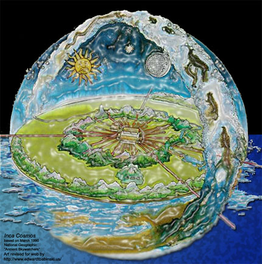

回溯几百年前，人们都相信与自然、与老天有一种天然的链接，好像是亲戚一般。科学时代为我带来许多方便的技术和设施，同时也让现代人类与自然的其他部分带来更多的割裂感：在孤寂的宇宙某处，一群随机出生的生命面对各种偶然事件。现代科技带来的负面影响不仅给蹂躏了世界各地的本土传统，也给在许多层面带来危机---从生态、经济到心理、和灵性层面。
与僵化的科学化的世界观不太一样，星象学把宇宙看成一个活生生的、有意义的生命体，建议与我们星系的各个星体的和谐共生的关系。Richard Tarnas在他的书中写道：“星象学提供的角度与现代和后现代的宇宙观唱是反调的。。。（它）可以为逐渐呈现的崭新完整的世界观提供了可能，这个宇宙观可以重塑人类和宇宙的关系，再现其原有的意义。”（Cosmos and Psyche）
书中的观点对于熟悉凯西解读的同学们来说，已经很熟悉了。解读强调了自然宇宙万物的合一性。不单单是星体影响每一个个体，每一个个体也在影响着太空中的星体（2787-1）。有一个解读甚至这么说，“太阳、月亮和行星在很大程度上受每一个出生的个体所影响，一直如此，而且越来越大！”（解读2326-1）
下面的关于太阳黑子的解读给出了一些人类与自然关系的解释：
你愈是觉察到自己与宇宙和其影响力的关系，你愈是有帮助和支援的能力…因为，当你为了最微小的而做的，你就是为你的缔造者而做---甚至太阳也因为你的内心焦虑而有所反映…知道为什么有太阳黑子吗？这是在地球上的神之子们，因其混乱、焦虑而在太阳上的自然反映。（解读5757-1）
尽管无法准确预测太阳黑子的活动，科学家们已经大概的了解每11年的太阳黑子的活动周期。即将到来的高峰期是在2012或2013年。过去，它曾造成通讯的瘫痪。而据专家预测，这一次的强度将超过以往的任何一次，加上我们普遍使用的电脑、手机、卫星等，我们得为大型的通讯传输瘫痪和其带来的后果做好准备。
目前，我们的各种媒体24小时地在播放种种灾难报道。这是否对2012 的太阳黑子产生影响？如果我们相信凯西解读关于人类意识与太阳活动关系的正确性，我们应该关注什么而不会加剧太阳黑子的活动？
要知道，你的心智---你的---是建设者！你的灵魂看起来像什么？一个点，太阳上的一个亮点还是暗点？（解读5757-1）
太阳黑子问题只是目前我们对宇宙的意识觉醒，可以解决这个世界种种问题的一个例子。这种意识的转换对于正在迈向新纪元的世界非常迫切。正像凯西、Richard Tarnas和星象学所指出的那样：这个宇宙是活生生的，让我们的思想行为反映出与之和谐的关系。
云思腾编译于Raye Mathis的星相文章
Source: http://blog.sina.com.cn/s/blog_4c7962c90100grej.html